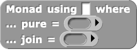
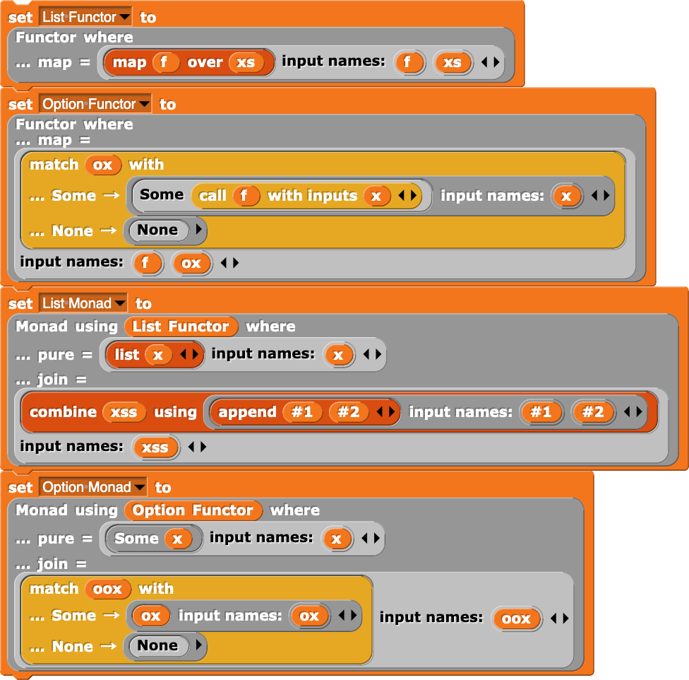
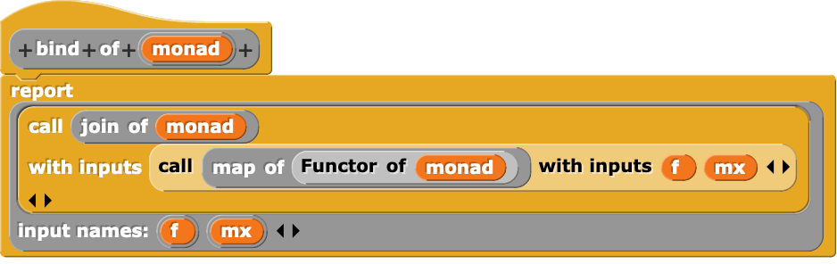
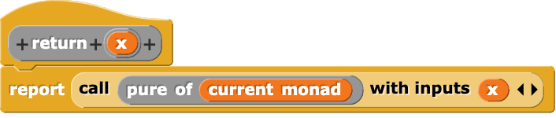
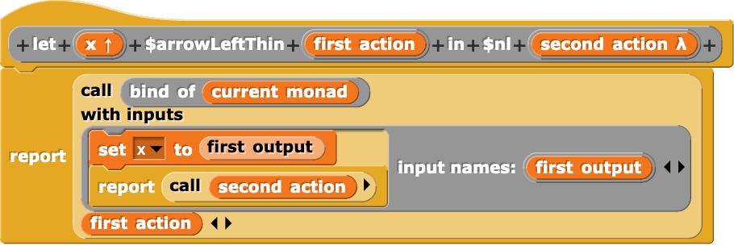
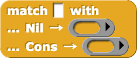
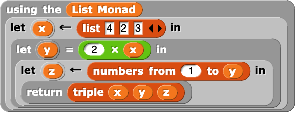
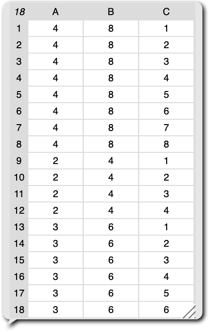

Do as I Say: Monadic Do Notation in Snap!
Snap! is one of the most widely-used programming languages whose primary editor is entirely block-based. For a while, I was skeptical of its expressive capabilities, but, after finally playing around with it myself, I realized that it has support for some extremely expressive constructs that allow for embedded domain-specific languages. As part of Sarah Chasins’s CS 294: Building User-Centered Programming Tools class, I implemented a monadic do construct in Snap!, similar to monadic do notation in Haskell and binding operators in OCaml.
I explain more about how this construct works in the rest of this post, but if you want to mess around with it live, you can do so here!
Implementation
To implement a monadic do construct, I had to implement three main features, each of which builds off the previous.
Feature 1: Functor and Monad Typeclasses
First, I introduced blocks that allow for the definition of “anonymous” functor and monad instances:

These blocks can be used to create typeclass instances that can be assigned to a variable using a normal Snap! set block:

Under the hood, I represent typeclasses as a product of functions, akin to dictionary passing. I also provide “getter” blocks that simply return the correct function in a given typeclass dictionary:
As well as “typeclass functions” such as bind for the monad typeclass that operate on arbitrary monads using these getters:

Feature 2: Monadic “Using” Notation
I then introduced a block that allows its subexpressions to use a particular monad implicitly:
It works by setting the global variable current monad to the supplied monad, running the block’s subexpression, and resetting current monad to its previous value. For example, using this block, I implemented a return block that simply calls the pure function of current monad with a given argument:

Feature 3: Monadic Let Bindings
Lastly, I introduced monadic let bindings akin to x <- mx in Haskell and let* x = mx in … in OCaml, which are sugar for the monadic bind operation:
These blocks only work in a “using” block because they rely on current monad being set to access its bind function. To implement this block, I used Snap!’s upvars, which, rather than consuming the value of a variable passed in by a user, instead provides a variable to the consumer of the block. This was a bit tricky because it mean that I had to rely on mutation to set this provided variable properly, which is not how typical monadic do implementations desugar. In particular, I treat the body of the monadic let binding as an uninterpreted expression and perform the following desugaring:
let* x = mx in body ↝ mx >>= (fun output -> (x := output; body))
Which, in Snap!, looks like this:

Conveniences
I also introduced an “option” (i.e. nullable) type implemented under-the-hood as a singleton list:
As well as pattern matching for options and lists:

And pure let bindings to complement monadic let bindings:
An Example
Using the list monad (which simulates a collection semantics for nondeterministic choice), I implemented a simple procedure that “nondeterministically” chooses a variable x from the list [4, 2, 3], then (purely) sets y to twice the value of x, then “nondeterministically” chooses z from the list [1, 2, …, y], and finally returns the triple (x, y, z):

When run, this program returns all possible outputs of the procedure just described:
